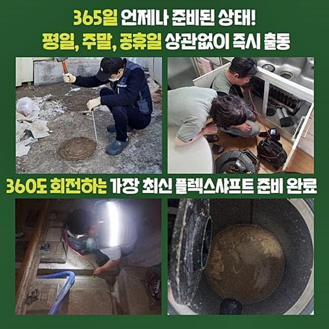
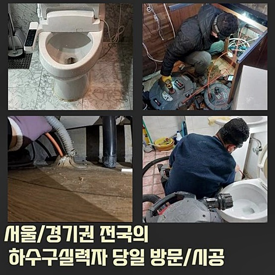
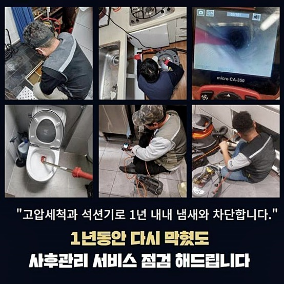
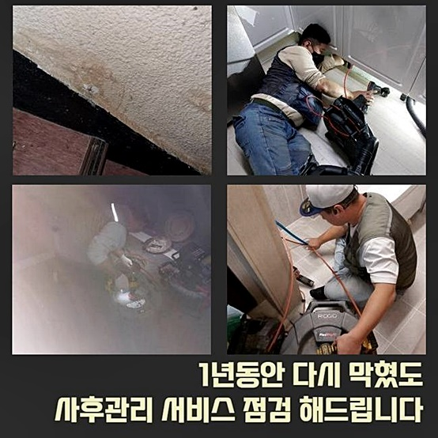
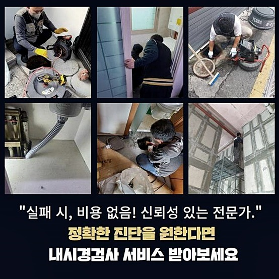

🏠 아산 법곡동싱크대배수구역류 남동 배관내시경카메라 설비업체
아산 법곡동 싱크대막힘 전문 시공 후기

📋 작업 개요
- 위치: 아산 법곡동, 법곡동, 아산
- 서비스 유형: 싱크대막힘, 하수구막힘, 배관막힘, 맨홀막힘, 역류해결, 뚫는업체, 배관청소, 고압세척
- 작업 일시: 2024. 8. 16. 17:18
- 업체명: 하수구수사대 (010-5615-2118)
🔍 문제 상황
아산 법곡동싱크대배수구역류 남동 배관내시경카메라 설비업체
출동드린장소는 상가건물입니다
여러건물에서 막힘증세가 발현되었다는것은 오랫동안 하수구속에 오염물질들이 축적된확률이 높은상황이기에 빠르게 대처해야합니다
혹시나 해결하지않는다면 빠르게 건물전체의 문제가커지며 물사용을하지 못하게되어 건물을 운영하는데 차질을빚는 좋지못한결과를 초래하는만큼 주의하실 필요가있죠
건물관리자가 배관점검을 착수하는과정에서 막히게된것이라는 전달을받았죠
건물관리인분이 보유중인 장비들을써서 직접뚫기위해 시도를해봤지만 뚫리지않았기에 조속히 저희쪽에 연락주신것이었어요
하수구가 막히게되었을때 직접시도하는건 위험한행동이죠
막힘이 발현하는 대표적인이유는 하수구안에 쌓여버린 이물질을 꼽을수있죠
자가적인 조치를통해 배수관수리를 진행하신다면 일시의도움을 받아볼수는있겠지만 배수관내부 안으로 오염물을 밀어넣는 경우로이어져 되려상태를 심각히 만들수있어요

🔎 원인 분석
💡 전문가 진단: 정밀 진단 장비를 사용하여 슬러지의 고착 여부를 판명하고 타격/세척 작업을 실시했습니다.
겉으로문제를 보이고있다면 좋지않은 상태라는것을 확인하신후 바로 전문가의 도움을받아보는게 올바른 해결책입니다
상가특성상 신속한처리가되지 못한다면 동시에 여러곳에서 막힘현상이 발현될거에요
피해확산을 방지하고자한다면 정확한원인을 살펴서 제거해주는게 중요해요
다짜고짜 기기들을투입해 진행하는것보다는 하수구카메라처럼 전문기계를 써서 검수작업을 첫번째로 진행해야만해요
카메라기기는 육안만으로 파악이불가한 배관깊숙한곳을 파악할수있는 장비라고할수있죠
배관통로를 파악한후 점검해주면 막힘발생 지점뿐아니라 이물특징까지 파악이가능해 확실한 수립과정을 진행할수있어요!
여러 현장경험을 바탕으로 누락없이 곳곳마다꼼꼼히 검수를한결과 메인하수도를 기점으로 엮인배관까지 수많은종류의 오염물질들이 쌓여있는걸 확인할수있었죠
하수도속에는 석회물같이 물에녹지않는 성질을가진 오염물들이 상당히축적된 상태였습니다
덩어리로 굳게되서 부피가커져버린 상황이었으므로 자칫하다가는 큰피해를 받을뻔한 상황이라는걸 알수있었죠
여러곳에서 이물질들이 축적되어있는 상태라면 샤프트기계와 흡입장비를 활용해서 쌓인이물들을 제거해주는게 좋아요

🔧 작업 과정
샤프트기를 활용하면 굳어버린 이물질들을 분해하는 효과를볼수있죠
파쇄완료된 오염물을 석션장비로 빨아들이는 작업들을 반복하여 진행한다면 정체된 배관상태가 점차 해소가되는 상황을 보실수있답니다
정체가 풀리고난뒤 중앙배관이 자리잡고있는 바깥쪽맨홀로 이동하여 고압세척수를 투입합니다
고압청소과정은 강력한압의 물을통해 이물을 분쇄하므로 돌처럼굳은 석회물과 부피가커진 이물까지 깨끗하게 소거합니다
하수관막힘이 잦게 발현하는곳일경우 간헐적인 하수구청소를 진행하실것을 권유드립니다
다세대가 이루고있는 상가는 연관문제가 수시로 발생하는만큼 일년동안 한두번정도는 배관점검을 진행해주시는것이 좋다는것을 참고하시면 좋을거에요
세척효과를 확실하게 만끽하고자 한다면 유의하셔야할 사항들이 몇가지있어요
배수관은우리의 생각과는 달리복잡히 얽혀있는상태고 내구도가좋지않은 상황일가능성이 높기에 문제를 살펴보지않고 강한수압을 입히게될경우 크랙이일어나 물이새는경우로 이어지게되는데요
수리과정에서 발현될수있는 상태를예방하고 안전한과정으로 진행되려면 배관의구조와 특징들을 정확하게 이해해야하고 배수관청소를 진행해볼때 구간마다 서로다른 압력을 사용하시는것이 옳은방법이에요
정기적인 배수관점검이 이뤄지지 않았다보니 예상과는달리 상당한시간이 소요되었어요
다양한 작업경력을 가진 전문가들이 묵묵하게 세척과정을 반복하여 진행해봤더니 하수도속에 쌓인것들을 깨끗하게 제거해냈죠
마지막과정으로 내시경설비를 사용해서 하수관을 검수했더니 전과는달리 달라진배수관을 살필수가있었죠
의뢰자께서 흡족하다고 표현해주셨으므로 저희도 같이기쁨을 느꼈던 현장이랍니다
배관막힘은 신속대응이 필수적인데 큰일이아니라는 생각하에 내버려두시는분이 많은상태에요
2차피해로 불거지게되면 복구시키기까지 금액적인것과 시간적인부분을 투자해야만 한답니다
다시한번 강조하지만 하수관막힘을 방치하게될경우 2차상황을 초래할수있어요 예시를들자면 화장실이나 싱크대에서 배수상황이 정상이아니면 일상생활에 지장이갑니다


✅ 작업 완료
더욱더 문제가커지면 범람하게되거나 악취문제까지 이어져서 곤란해질겁니다
이문제를 바로잡으려면 전문업체에 맡겨서 확실한 문제파악후 조치해봐야합니다
고객분의 중요한시간과 비용측면에서 고려해야하기에 신경을써서 사전에 예방대책을 취하시는게 좋아요
하수구시스템이 무너졌을때 금전적인부분을 줄이고싶으시다면 문제발현을 발견한즉시 조치하는게 해결의 지름길이라는것을 기억하세요



⚠️ 주방 싱크대 배관 막힘 예방 수칙
- ✅ 기름기가 묻은 식기나 프라이팬은 설거지 전 키친타올로 반드시 기름때를 닦아내세요.
- ✅ 주기적으로 싱크대 개수대에 뜨거운 물을 가득 받아 한 번에 내려 배관 내부 기름을 씻어내세요.
- ✅ 배수구 거름망을 미세한 필터로 사용하시고 음식물 찌꺼기가 틈으로 새어 들지 않게 관리하세요.
- ✅ 베이킹소다와 식초를 뜨거운 물과 함께 일주일에 한 번씩 부어주면 배관 살균과 막힘 예방에 좋습니다.
💡 핵심 정리
- 확실한 장비 작업(내시경 점검 및 샤프트 스케일링)으로 원인을 뿌리 뽑습니다.
- 작업 후 1년 이내에 동일한 부위 재발 시 100% 무상 A/S 서비스를 보장합니다.
- 서울 · 경기 · 인천 전 지역에 24시간 언제든 긴급 출동할 수 있도록 항시 대기 중입니다.
❓ 자주 묻는 질문 (FAQ)
🚨 아산 법곡동 싱크대막힘 문제로 고민이신가요?
정확한 원인 진단과 확실한 시공으로 재발 없는 해결을 약속드립니다.
24시간 긴급 출동 | 서울 · 경기 · 인천 전지역 | 1년 내 재발 시 무상 A/S